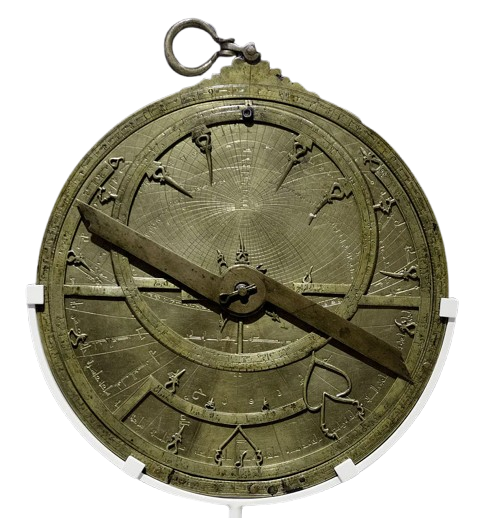

<html>
<head>
	<meta charset="utf-8">
	<title> Astrolábio </title>
</head>
</html>

<body style="padding:0; margin:0; background-color:#FFFFFF; display:flex; align-items:center ; justify-content:center;">
	<div style="background-color:#4682B4; width: 300px; height: 110%;float: left; width: 1000px;">
			<center>
					<hr style= "width:320px; height:5px; background-color: #00008B; border: none;">
					<font color="#FFFFFF" face="Perpetua","Open Sans" size="20px">
						<b>A s t r o l á b i o</b>
					</font>
					<hr style= "width:320px; height:5px; background-color: #00008B; border: none;">
			</center>
		<p>
		<center>
			<table>
				<tr>
					<td>
						
					</td>
				</tr>
				<tr>
					<td>
						<font face="Courier New" color="#FFFFFF" size="5px">
							<center><b>(150 a.C)</b></center>
							<p>
						</font>	
					</td>
				</tr>
			</table>
			<br><br><br>
			<table>
				<tr>
					<td>
						<font color="#FFFFFF" face="Perpetua","Open Sans" size="5px">	
								<ul>
									<li> Dispositivo analógico desenvolvido pelos gregos e <br> aprimorado pelos
										árabes. </li>
									<p>
									<li> Servia para medir a altura dos astros e calcular a hora <br> do dia, entre
										outras funções. </li>
									<p>
									<li> Usado pelos europeus durante as Grandes Navegações." </li>
									<p>
									<li> É formado por uma representação das principais estrelas no céu, <br>
										gravadas no tímpano, e outros elementos como o mater, roda, rete, <br>
										alidade e régua</li>
								</ul>
						<font>
					</td>
				</tr>
			</table>
		</center>
		<br>
		<center>
			<table>
					<tr>
						<td>
							<a href="Página 1.html">
								<button style="width: 100px; height: 50px; color: #FFFFFF; background-color: #00008B; border-radius: 16px; ;">
									<
								</button>
							</a>
						</td>
						<td>
							<a href="index.html">
								<button style="width: 100px; height: 50px; color: #FFFFFF; background-color: #00008B; border-radius: 16px; ;">
									INÍCIO
								</button>
							</a>
						<td>
							<a href="Página 3.html">
								<button style="width: 100px; height: 50px; color: #FFFFFF; background-color: #00008B; border-radius: 16px;">
									>
								</button>
							</a>
						</td>
					</tr>
			</table>
		</center>	
	</div>
</body>
